白：是美丽化身，白美人、白雪公主、白衣 天使、白领丽人、白天鹅等等，皮肤白皙、温 柔多情、众人瞩目、让人羡慕，穿什么衣服都 好看，不用化妆也迷人！
黑：黑孩、黑妹、傻大粗黑、不健康，不招 人喜欢，不起眼儿，工作、生活、上学、求职 遭歧视，化妆难看，衣服难买，没效果...
美白护肤品对美白有作用吗 ?
从西方医学对面部肌肤的认识上来说
肌肤分为表皮层和真皮层
其中表皮层分为角质层、透明层、颗粒层
以及有棘层和基底层
每一层就是一个屏障抵抗外来物质的侵略
所以很多有害物质很难伤害到我们
同时绝大部分护肤品也无法真正被皮肤吸收，
仅仅是涂抹遮盖
依靠护肤品美白就是一场天方夜谭
网络疯传、明星追捧、网红热荐------
“养白汤”究竟为何物？
他就是坊间口碑相传，用一剂汤茶能调白肤色的“养白汤”传承人--刘老先生。
刘老先生祖上是宫廷太医，继承祖业一生悬壶的刘老先生花费20年时间，重新整理祖上留下的清宫秘方，发现并重现了“黑变白”的不传之方，多年来很多朋友纷纷慕名，只求一汤。其中不乏社会名流、富豪商贾，“养白汤”就这样一传十、十传百名扬千里之外。更有不少演艺界知名人士和“富二代“、”白富美“常年服用刘老的“养白汤剂”，养白汤也在上流精英圈子里声名鹊起。

品味300年宫廷美白秘方你也可以做娘娘！
传说此汤本为宫中女子病愈后复本固原、润肌生白、调气养血之用（最常见的比如小产、产后失血、妇科疾病等），是一剂药方，没想到久服后不但气色俱佳，且皮肤越来越白皙细嫩。于是，一剂药被改良成了一道深受娘娘们喜爱的美白养颜汤。
“喝了我的养白汤，皮肤没有不变白的。并且，我保证你现在喝到的汤，从效果到口感都和三百年前宫中妃嫔们喝到的是一个样，真材实料，原汁原味。调理三个周期要是没效果，我分文不取！”
——刘老自信的说
名贵食材、精挑细选、精妙配伍、精心炮制，只为一剂“养白汤”
“养白汤”完全遵循宫廷组方规制：一，选材名贵，不考虑药材多么贵重，只关注其效果。二、选材精细，药材的药龄、产地、采摘时间、季节等都要考虑，可谓精挑细选。三、配方安全保守，尽量选择低毒、无毒的食材，用药于食，“食疗胜药疗”。四、配伍精妙，在保证效果的前提下，口感味道要好，迎合宫中贵人们长期服用之便。也正是严格按秘方配置，才保证了“养白汤”能久盛不衰，口碑相传，延续至今。
-
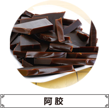
补气养血，长年吃阿胶对女士有非常好的美容效果，面部无斑，皱纹少，而且补血效果好，可以减缓衰老
-
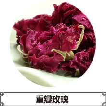
富含维生素C，抵抗皮肤衰老，玫瑰中的糖具有强大的保湿和锁水功能，可以收敛肌肤和紧致毛孔，同时还具有抗菌的功效，使肌肤呈现细腻光泽
-
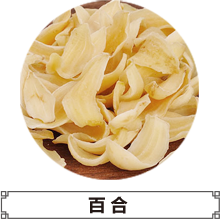
含有丰富的营养物质有蛋白质、淀粉、维生素、钙等多种微量元素。对常委、肺、肝等身体器官有修复滋养的功效
-
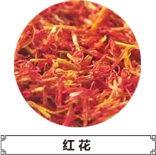
活血化瘀，通经止痛，促进新陈代谢，排除黑色素，并滞留体内黑色素分解
-
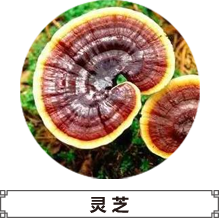
抑制黑色素，控制雀斑，有"仙草“之称，对神经衰弱引起的，面色萎黄，精神疲乏，容颜憔悴，有明显的疗效
-
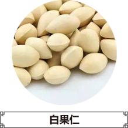
祛除血管垃圾，减缓皮肤衰老，可令肌肤柔嫩光滑，白皙娇美，有”活化石“之称
-
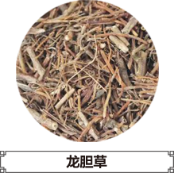
舒缓，镇静，滋润肌肤，极品中药美容药材
-
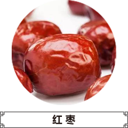
味甘性温，归脾胃经，有补中益气，养血安神，被誉为“百果之王”
-
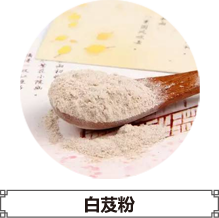
滋润肌肤，令肌肤光滑如玉，被誉为”美白仙子“，对风吹日晒较多，皮肤粗糙或是皱纹等有良效
-
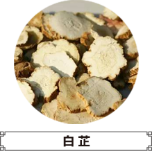
令润泽光滑，有”神药“之称，可令皮肤，呈现出水一样的灵气
-
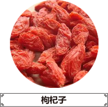
被称为“东方神果”，含有多种氨基酸，并含有甜菜碱、玉蜀黍黄素、酸浆果红素等有非常好的保健功效
-
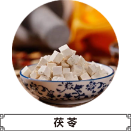
提高机体免疫能力，有”四时神药“之称，还可使细胞组织，活性增强，从而使皮肤，毛发显得更加滋润，达到美容的效果
粗黑、暗黄、长色斑，每天两杯“黑变白”
1个周期
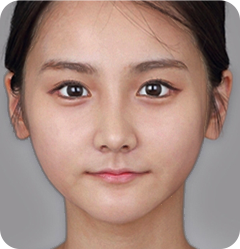内调为主，养白为辅。气血通畅、盈血荣颜。月经不调和痛经都会有所改善，身体感觉轻快顺畅，面部气色渐佳、有光泽，肤色较开始会有稍白。
2个周期
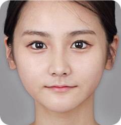经过一个完整换肤周期调养后，脏腑通调，气血充足，萎黄的皮肤逐渐消失，皮肤光亮润泽，抑黑效果明显，肤色渐白，斑块变淡，人也变得更加自信、有活力。
3个周期
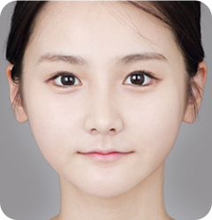去腐生肌，褪黑生白效果明显。粗黑、暗黄的皮肤有根本性改变，小斑块消失，肤色渐白，肤质细腻有光泽。肤龄年轻了好几岁，像换了层皮肤，变了个人似的。穿什么衣服都好看，化个淡妆也迷人，温柔妩媚华丽变身！
为防止不法商家假冒，保护消费者权益，特申请注册商标“黑变白”，受国家知识产权保护。
提高一个靓白度，颜值增加二十分
一说起养白汤，26岁的李女士感慨万分，李女士从小别人就给她起外号“煤球”“黑炭”“包公”之类的，也曾经因为“太黑”被喜欢的男生拒绝，跟人合照时她总能比小伙伴们黑出十几条街，惨不忍睹啊！越长大越发现身边许多相貌一般的女孩都因为皮肤白皙，成为了大家追捧的对象。而自己富和美都有了唯独缺少一个白，抹个BB霜吧还是脖子也要一起抹上，非常麻烦，而且自己皮肤非常敏感，有时候脸上不能涂抹化妆品。为了美白，尝试过太多的偏方，美白丸和三白汤全部都有试过，也没什么成效。打过美白针，每一次去打精神和身体都受折磨，在脸上打针疼不用说，还要时刻担忧美白针会不会有什么危险，并且美白针还有时效，过一两年还需要打。闺蜜是养白汤的忠实粉丝，李女士看到闺蜜喝了一个多月皮肤白了很多二话不说自己也来尝试。在喝之前，李女士已经拍好了一张照片留证，喝了三个多月的养白汤，李女士的皮肤和从前大不一样，李女士自己都不能相信居然白了这么多。三个月下来其实自己每天看觉得都差不多，但是和照片一对比竟然这么明显，难怪朋友们都说她“重新投胎”，李女士现在和闺蜜一样都是养白汤的忠实粉，她说，感谢养白汤让她从此和“黑”说拜拜现在李女士也是美美的女神。
女人每天八杯水，其中两杯“黑变白”
38岁的陈女士已经是一家建筑公司的副总，事业是顺风顺水，然而工作的巨大压力和经常熬夜使得她皮
肤状况不佳，常年累月下来肤色暗沉，毛孔粗大，不论是怎样的女强人都是女人，爱美之心人皆有之。
听公司里的小姑娘说都在打美白针，陈女士自己也想试一试是不是真的有那么神奇，打了第一针之后陈
女士就害怕了，试过之后才知道往脸上打针那么疼，网上还有好多关于美白针的危害，看到这些陈女士
放弃了打美白针方法。
直到秘书和她无意间提起中医美白方子，陈女士这才找到了养白汤，做了对药方的了解之后陈女士开始
每日服用。两个月之后陈女士看到了奇迹，皮肤白皙透亮，年轻了好几岁！
长出的白，天生的美
来自深圳的王女士是一位全职太太，丈夫经营一家私人企业。王女士皮肤暗黄，有色斑，在生完孩子之后皮肤更是一日不如一日，丈夫还经常拿她开玩笑说“黄脸婆”，有时候和丈夫一起出去应酬，他的女性朋友各个肤白貌美，同样身为女人，王女士心中有一点点的嫉妒，哪个女人不爱美呢？自己平时用的那些昂贵护肤品打着美白的旗号却一点用都没有。后来王女士在网上各种翻找美白方子，自己在家里做“三白汤”，苦得难以想象，喝一次都有点受不了，更不用说喝好几个月。直到王女士知道了“养白汤”，就下定决心试一试，死马当成活马医吧，养白汤口感也不错，王女士把这个当成茶水喝，不知不觉一个月下来都养成了喝养白汤的习惯，周围的朋友们见了都说“最近气色不错啊，肤色白了”，王女士还特地拍了照片做美白对比。相比一个月前的皮肤暗黄粗糙，王女士在喝完养白汤一个月之后肤色明显红润白皙不少，气质都提升好多。
扫码加关注，美白不迷路！
心急变白的你，加刘老助理的微信号。可在线咨询获取养白秘方！
-
hbb3001
3180421692
-
hbb3002
3055396205
- 先付款
后发货 - 支付宝购买
- 款到一个
小时发货 - 享受
更多优惠
- 先发货
后付款 - 快递送货到家
- 收货后
再付款 - 零风险订购安全保障
黑变白养白汤致力于打造“中国绿色美白在线第一平台”的美容网（www.zzbaoguan.com）销售系统和全国统一400-859-6685免费电话预订专席。100%厂家直销货，严格检测 ，优质供应。用绝对的低价，为广大爱美人士提供更加安全、优质的美白产品与健康服务。为了您的满意，我们分秒必争。
- 支付宝购买
- 实惠更多
- 支付更安全